Data Center Containment Specialists
We custom design our solutions to meet the needs of each facility
At WindChill, we specialize in containment solutions. We collaborate closely with each client - regardless of project
scale - to design and fabricate custom systems that meet their specific requirements. Once the design is finalized,
we commence manufacturing. Our rigid containment units are constructed from robust aluminum frames and clear,
fire-rated polycarbonate that offers the industry's highest optical clarity. A variety of door configurations
are available to address distinct operational needs. In addition to our standard product line, we engineer and build
bespoke solutions to overcome unique obstacles or constraints present in any data-center environment. Whether implementing hot-aisle
or cold-aisle containment, we are dedicated to delivering reliable, precisely fitted products.
Origins
40 years combined manufacturing experience
WindChill Engineering launched in 2012, building on more than four decades of combined manufacturing expertise. Recognizing
a gap in the market for a containment partner that collaborates closely with data-center stakeholders, our founders set out
to deliver fully customized containment solutions. Since our inception, we have teamed with industry experts to serve a
diverse clientele—including small businesses, colocation facilities, large private institutions, and Fortune 500 enterprises.
Meaningful Customer Connections
No manufacturer provides better support
Above all, we take pride in every facet of our customer support. From the initial design phase through installation, warranty,
and ongoing assistance, our team is always ready to answer questions and ensure the end-user is satisfied with the solution.
We back our commitment with responsive, knowledgeable service that anticipates needs at each step. Experience our support once,
and you'll never look elsewhere.
Data Center Containment
Advantages

Less Energy
Reduce fan energy requirements by 20% to 25%,
ROI
Containment can pay for itself in a year

Longevity
Protect servers from thermal stresses
Sustainability
Less energy means less environmental impact